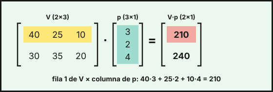
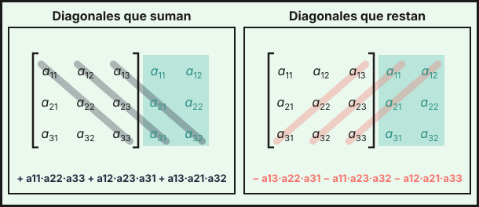

Matrices y determinantes
1. Concepto y tipos
Una matriz de dimensión \(m \times n\) es una tabla de números con \(m\) filas y \(n\) columnas. El elemento \(a_{ij}\) está en la fila \(i\) y la columna \(j\). Las matrices sirven para organizar datos: ventas por tienda, personas encuestadas por edad, costes por producto.
Ejemplo: en una encuesta sobre el transporte público, las filas son la respuesta (a favor, en contra) y las columnas, la franja de edad (18–35, 36–55, más de 55):
\[E=\begin{pmatrix}120&95&60\\80&105&140\end{pmatrix}\in\mathcal{M}_{2\times 3}\]
El elemento \(e_{23}=140\) son las personas de más de 55 años que están en contra.
| Tipo | Condición |
|---|---|
| Cuadrada de orden \(n\) | \(m=n\) |
| Fila / columna | \(m=1\) / \(n=1\) |
| Diagonal | cuadrada con \(a_{ij}=0\) si \(i\neq j\) |
| Identidad \(I_n\) | diagonal con unos en la diagonal |
| Triangular | ceros por encima (o por debajo) de la diagonal |
| Simétrica | \(A=A^t\) |
| Nula \(O\) | todos los elementos son 0 |
2. Operaciones
Suma y resta: solo entre matrices de la misma dimensión, elemento a elemento. Si \(E_A\) y \(E_B\) son las encuestas de dos municipios, el conjunto de ambos es
\[E_A+E_B=\begin{pmatrix}120&95&60\\80&105&140\end{pmatrix}+\begin{pmatrix}70&60&40\\50&65&90\end{pmatrix}=\begin{pmatrix}190&155&100\\130&170&230\end{pmatrix}\]
Producto por un número: se multiplica cada elemento por el número. Si una tienda vende cada semana \(V=\begin{pmatrix}40&25&10\\30&35&20\end{pmatrix}\) unidades de café, té y cacao (filas: tienda 1 y tienda 2), en dos semanas iguales vende \(2\cdot V=\begin{pmatrix}80&50&20\\60&70&40\end{pmatrix}\).
Producto de matrices: \(A_{m\times n}\cdot B_{n\times p}=C_{m\times p}\). El elemento \(c_{ij}\) es la fila \(i\) de \(A\) por la columna \(j\) de \(B\):
\[c_{ij}=a_{i1}b_{1j}+a_{i2}b_{2j}+\dots+a_{in}b_{nj}\]
Si el precio por unidad es \(p=\begin{pmatrix}3\\2\\4\end{pmatrix}\) euros, los ingresos de cada tienda son \(V\cdot p\):

Otro ejemplo con matrices cuadradas:
\[A=\begin{pmatrix}2&1\\0&1\end{pmatrix},\ B=\begin{pmatrix}1&3\\1&0\end{pmatrix}:\qquad A\cdot B=\begin{pmatrix}3&6\\1&0\end{pmatrix},\quad B\cdot A=\begin{pmatrix}2&4\\2&1\end{pmatrix}\]
- Solo se puede multiplicar si columnas de \(A\) = filas de \(B\).
- No es conmutativo: en general \(A\cdot B\neq B\cdot A\), como en el ejemplo anterior.
- \(A\cdot B=O\) no implica \(A=O\) ni \(B=O\).
- \((A+B)^2=A^2+A\cdot B+B\cdot A+B^2\), que no es \(A^2+2A\cdot B+B^2\) salvo que \(A\cdot B=B\cdot A\).
Propiedades útiles: \(A\cdot(B+C)=A\cdot B+A\cdot C\), \((A\cdot B)\cdot C=A\cdot(B\cdot C)\) y \(A\cdot I_n=I_n\cdot A=A\).
Traspuesta. La traspuesta \(A^t\) se obtiene cambiando filas por columnas. Por ejemplo, \(V^t=\begin{pmatrix}40&30\\25&35\\10&20\end{pmatrix}\). Propiedades:
\[(A+B)^t=A^t+B^t \qquad (k\cdot A)^t=k\cdot A^t \qquad (A\cdot B)^t=B^t\cdot A^t \qquad (A^t)^t=A\]
Potencias. \(A^n=A\cdot A\cdots A\) (\(n\) veces), solo para matrices cuadradas. Para calcular \(A^n\), halla \(A^2,\ A^3,\ A^4\), detecta el patrón y generalízalo. Ejemplo con \(A=\begin{pmatrix}1&0\\2&1\end{pmatrix}\):
\[A^2=\begin{pmatrix}1&0\\4&1\end{pmatrix},\quad A^3=\begin{pmatrix}1&0\\6&1\end{pmatrix},\quad A^4=\begin{pmatrix}1&0\\8&1\end{pmatrix}\ \Rightarrow\ A^n=\begin{pmatrix}1&0\\2n&1\end{pmatrix}\]
Si \(A^2=I_n\) (por ejemplo \(\begin{pmatrix}0&1\\1&0\end{pmatrix}\)), las potencias alternan: \(A^n=A\) si \(n\) es impar y \(A^n=I_n\) si \(n\) es par.
3. Determinantes
El determinante de una matriz cuadrada \(A\), que se escribe \(|A|\), es un número asociado a ella. Sirve para saber si \(A\) tiene inversa, para calcularla y para hallar el rango. En este curso se calculan hasta orden 3.
Orden 2: producto de la diagonal principal menos producto de la diagonal secundaria.
\[\left|\begin{matrix}a&b\\c&d\end{matrix}\right|=ad-bc\qquad\text{Ejemplo: }\left|\begin{matrix}5&2\\3&4\end{matrix}\right|=20-6=14\]
Orden 3 — regla de Sarrus. Se repiten a la derecha las dos primeras columnas. Suman los productos de las tres diagonales descendentes y restan los de las tres ascendentes:

\[\left|\begin{matrix}a_{11}&a_{12}&a_{13}\\a_{21}&a_{22}&a_{23}\\a_{31}&a_{32}&a_{33}\end{matrix}\right|=a_{11}a_{22}a_{33}+a_{12}a_{23}a_{31}+a_{13}a_{21}a_{32}-a_{13}a_{22}a_{31}-a_{11}a_{23}a_{32}-a_{12}a_{21}a_{33}\]
Ejemplo: \[\left|\begin{matrix}1&2&3\\0&1&4\\2&1&0\end{matrix}\right|=(0+16+0)-(6+4+0)=16-10=6\]
Sarrus solo vale para orden 3. Para otros órdenes se usan los adjuntos.
Menores y adjuntos. El menor \(M_{ij}\) es el determinante que queda al quitar la fila \(i\) y la columna \(j\). El adjunto es \(A_{ij}=(-1)^{i+j}M_{ij}\); los signos forman el tablero \(\begin{pmatrix}+&-&+\\-&+&-\\+&-&+\end{pmatrix}\). El determinante se puede desarrollar por cualquier fila o columna:
\[|A|=a_{i1}A_{i1}+a_{i2}A_{i2}+a_{i3}A_{i3}\]
Conviene elegir la fila o columna con más ceros. Desarrollando por la segunda columna:
\[\left|\begin{matrix}3&0&2\\1&4&-1\\2&0&5\end{matrix}\right|=4\cdot(+1)\left|\begin{matrix}3&2\\2&5\end{matrix}\right|=4\cdot11=44\]
Propiedades. Sean \(A\) y \(B\) matrices cuadradas de orden \(n\):
| Propiedad | Fórmula |
|---|---|
| Traspuesta | \(\lvert A^t\rvert=\lvert A\rvert\) |
| Producto | \(\lvert A\cdot B\rvert=\lvert A\rvert\cdot\lvert B\rvert\) |
| Inversa | \(\lvert A^{-1}\rvert=\dfrac{1}{\lvert A\rvert}\) |
| Producto por un número | \(\lvert k\cdot A\rvert=k^n\cdot\lvert A\rvert\) |
Sobre filas (o columnas):
- Si se intercambian dos filas, el determinante cambia de signo.
- Si una fila se multiplica por \(k\), el determinante queda multiplicado por \(k\).
- Si a una fila se le suma un múltiplo de otra, el determinante no cambia.
- Si hay una fila de ceros, o dos filas iguales o proporcionales (en general, una fila combinación lineal de las otras), el determinante es \(0\).
Ejemplo: si \(A\) es de orden 3 y \(|A|=3\), entonces \(|A^t|=3\), \(|A^2|=9\), \(|A^{-1}|=\tfrac13\) y \(|2\cdot A|=2^3\cdot3=24\).
Ojo: \(|A+B|\neq|A|+|B|\) en general, y \(|k\cdot A|\neq k\cdot|A|\) (es \(k^n\cdot|A|\)).
4. Rango de una matriz
El rango \(\operatorname{rg}A\) es el número máximo de filas (o columnas) linealmente independientes. Se puede calcular de dos formas.
Por Gauss: se hacen ceros por debajo de la diagonal y se cuenta el número de filas no nulas. Ejemplo:
\[\begin{pmatrix}1&2&1\\2&1&-1\\3&3&0\end{pmatrix}\xrightarrow[F_3-3F_1]{F_2-2F_1}\begin{pmatrix}1&2&1\\0&-3&-3\\0&-3&-3\end{pmatrix}\xrightarrow{F_3-F_2}\begin{pmatrix}1&2&1\\0&-3&-3\\0&0&0\end{pmatrix}\]
Hay dos filas no nulas, luego el rango es 2.
Por menores: el rango es el orden del mayor menor distinto de cero. En la matriz anterior, el determinante de orden 3 vale \(0\) (la tercera fila es la suma de las otras dos) y el menor \(\left|\begin{matrix}1&2\\2&1\end{matrix}\right|=-3\neq0\), luego el rango es 2.
Con un parámetro. Se calcula el determinante, se ve para qué valores se anula y se estudia el rango en cada caso. Para \(P(m)=\begin{pmatrix}1&1&m\\1&m&1\\m&1&1\end{pmatrix}\):
\[|P(m)|=-(m-1)^2(m+2)\]
- Si \(m\neq1\) y \(m\neq-2\), el determinante no es 0 y \(\operatorname{rg}P=3\).
- Si \(m=1\), todas las filas son \((1,\,1,\,1)\) y \(\operatorname{rg}P=1\).
- Si \(m=-2\), las dos primeras filas \((1,\,1,\,-2)\) y \((1,\,-2,\,1)\) no son proporcionales y el determinante es 0, luego \(\operatorname{rg}P=2\).
- \(\operatorname{rg}A\le\min(m,n)\).
- Una matriz cuadrada de orden \(n\) tiene \(|A|\neq0\) si y solo si \(\operatorname{rg}A=n\).
5. Matriz inversa
Una matriz cuadrada \(A\) de orden \(n\) es invertible si existe \(A^{-1}\) con \(A\cdot A^{-1}=A^{-1}\cdot A=I_n\). Esto ocurre si y solo si \(|A|\neq0\). La inversa, si existe, es única, y además:
\[(A\cdot B)^{-1}=B^{-1}\cdot A^{-1}\qquad (A^t)^{-1}=(A^{-1})^t\]
Cálculo por adjuntos:
\[A^{-1}=\frac{1}{|A|}\,\bigl(\operatorname{Adj}A\bigr)^t\]
donde \(\operatorname{Adj}A\) es la matriz de los adjuntos \(A_{ij}\). Pasos: (1) calcula \(|A|\) y comprueba que no es 0; (2) calcula los adjuntos; (3) traspón la matriz de adjuntos; (4) divide entre \(|A|\).
Para orden 2 hay atajo: si \(|A|=ad-bc\neq0\), entonces \(\begin{pmatrix}a&b\\c&d\end{pmatrix}^{-1}=\dfrac{1}{ad-bc}\begin{pmatrix}d&-b\\-c&a\end{pmatrix}\). Por ejemplo, si \(H=\begin{pmatrix}4&6\\1&2\end{pmatrix}\), entonces \(|H|=2\) y
\[H^{-1}=\frac12\begin{pmatrix}2&-6\\-1&4\end{pmatrix}=\begin{pmatrix}1&-3\\-\tfrac12&2\end{pmatrix}\]
Ejemplo de orden 3 con \(Q=\begin{pmatrix}2&1&1\\1&1&0\\0&1&1\end{pmatrix}\):
- Por Sarrus, \(|Q|=(2+0+1)-(0+0+1)=2\neq0\), luego \(Q\) es invertible.
- Adjuntos: \(A_{11}=1,\ A_{12}=-1,\ A_{13}=1\); \(A_{21}=0,\ A_{22}=2,\ A_{23}=-2\); \(A_{31}=-1,\ A_{32}=1,\ A_{33}=1\).
- Se traspone la matriz de adjuntos y se divide entre \(|Q|=2\):
\[Q^{-1}=\frac12\begin{pmatrix}1&-1&1\\0&2&-2\\-1&1&1\end{pmatrix}^{t}=\frac12\begin{pmatrix}1&0&-1\\-1&2&1\\1&-2&1\end{pmatrix}=\begin{pmatrix}\tfrac12&0&-\tfrac12\\-\tfrac12&1&\tfrac12\\\tfrac12&-1&\tfrac12\end{pmatrix}\]
Con un parámetro: para \(A(m)=\begin{pmatrix}m&1\\4&m\end{pmatrix}\) se tiene \(|A|=m^2-4\), que se anula en \(m=\pm2\). Luego \(A\) tiene inversa para todo \(m\neq2\) y \(m\neq-2\).
Se escribe \((A\,|\,I_n)\) y se hacen operaciones entre filas hasta obtener \((I_n\,|\,A^{-1})\). Si aparece una fila de ceros a la izquierda, \(A\) no es invertible. Con \(G=\begin{pmatrix}3&1\\5&2\end{pmatrix}\):
\[\left(\begin{array}{cc|cc}3&1&1&0\\5&2&0&1\end{array}\right)\xrightarrow{3F_2-5F_1}\left(\begin{array}{cc|cc}3&1&1&0\\0&1&-5&3\end{array}\right)\xrightarrow{F_1-F_2}\left(\begin{array}{cc|cc}3&0&6&-3\\0&1&-5&3\end{array}\right)\xrightarrow{F_1/3}\left(\begin{array}{cc|cc}1&0&2&-1\\0&1&-5&3\end{array}\right)\]
Luego \(G^{-1}=\begin{pmatrix}2&-1\\-5&3\end{pmatrix}\).
6. Ecuaciones matriciales
Se despeja la matriz incógnita \(X\) como en una ecuación normal, pero cuidando el orden del producto y sin dividir: se multiplica por la inversa, que debe existir (\(|A|\neq0\)).
| Ecuación | Solución |
|---|---|
| \(A\cdot X=B\) | \(X=A^{-1}\cdot B\) (inversa a la izquierda) |
| \(X\cdot A=B\) | \(X=B\cdot A^{-1}\) (inversa a la derecha) |
| \(A\cdot X+B=C\) | \(X=A^{-1}\cdot(C-B)\) |
| \(A\cdot X+X=B\) | \((A+I_n)\cdot X=B\), luego \(X=(A+I_n)^{-1}\cdot B\) |
| \(A\cdot X\cdot B=C\) | \(X=A^{-1}\cdot C\cdot B^{-1}\) |
Al sacar factor común, la identidad aparece explícita: \(A\cdot X+X=(A+I_n)\cdot X\), no \((A+1)\cdot X\).
Ejemplo 1 (producción). Una fábrica elabora dos productos, \(P_1\) y \(P_2\), con dos materias primas, \(M_1\) y \(M_2\). La matriz \(A\) da las unidades de materia prima por unidad de producto (filas: \(M_1\) y \(M_2\); columnas: \(P_1\) y \(P_2\)), y \(B\) el consumo total de materias primas en dos semanas (una columna por semana). La matriz \(X\) de unidades producidas de cada producto en cada semana cumple \(A\cdot X=B\):
\[A=\begin{pmatrix}2&1\\1&3\end{pmatrix},\quad B=\begin{pmatrix}100&120\\105&135\end{pmatrix}\]
Como \(|A|=5\), \(A^{-1}=\dfrac15\begin{pmatrix}3&-1\\-1&2\end{pmatrix}\) y
\[X=A^{-1}\cdot B=\frac15\begin{pmatrix}3&-1\\-1&2\end{pmatrix}\begin{pmatrix}100&120\\105&135\end{pmatrix}=\frac15\begin{pmatrix}195&225\\110&150\end{pmatrix}=\begin{pmatrix}39&45\\22&30\end{pmatrix}\]
En la primera semana se producen 39 unidades de \(P_1\) y 22 de \(P_2\).
Ejemplo 2. Resuelve \(A\cdot X+X=B\) con \(A=\begin{pmatrix}2&1\\1&1\end{pmatrix}\) y \(B=\begin{pmatrix}5&10\\5&5\end{pmatrix}\). Se tiene \((A+I_2)\cdot X=B\), con \(A+I_2=\begin{pmatrix}3&1\\1&2\end{pmatrix}\) y \(|A+I_2|=5\), luego
\[X=(A+I_2)^{-1}\cdot B=\frac15\begin{pmatrix}2&-1\\-1&3\end{pmatrix}\begin{pmatrix}5&10\\5&5\end{pmatrix}=\begin{pmatrix}1&3\\2&1\end{pmatrix}\]
Ejemplo 3. Resuelve \(X\cdot A-2I_2=B\) con \(A=\begin{pmatrix}1&2\\1&3\end{pmatrix}\) y \(B=\begin{pmatrix}3&1\\2&5\end{pmatrix}\). Se pasa \(2I_2\) al otro lado y se multiplica por \(A^{-1}\) a la derecha: \(X=(B+2I_2)\cdot A^{-1}\). Como \(|A|=1\), \(A^{-1}=\begin{pmatrix}3&-2\\-1&1\end{pmatrix}\) y
\[X=\begin{pmatrix}5&1\\2&7\end{pmatrix}\begin{pmatrix}3&-2\\-1&1\end{pmatrix}=\begin{pmatrix}14&-9\\-1&3\end{pmatrix}\]
- \(A\cdot B\) existe si columnas de \(A\) = filas de \(B\), y en general \(A\cdot B\neq B\cdot A\).
- \((A\cdot B)^t=B^t\cdot A^t\) y \((A\cdot B)^{-1}=B^{-1}\cdot A^{-1}\).
- \(|A|\) de orden 2: \(ad-bc\); de orden 3: Sarrus o adjuntos. \(|A\cdot B|=|A|\cdot|B|\) y \(|k\cdot A|=k^n\cdot|A|\).
- \(\operatorname{rg}A\) = nº de filas no nulas tras Gauss, o mayor orden de un menor \(\neq0\).
- \(A\) es invertible si y solo si \(|A|\neq0\), y entonces \(A^{-1}=\dfrac{1}{|A|}(\operatorname{Adj}A)^t\).
- \(A\cdot X=B\Rightarrow X=A^{-1}\cdot B\); \(X\cdot A=B\Rightarrow X=B\cdot A^{-1}\).